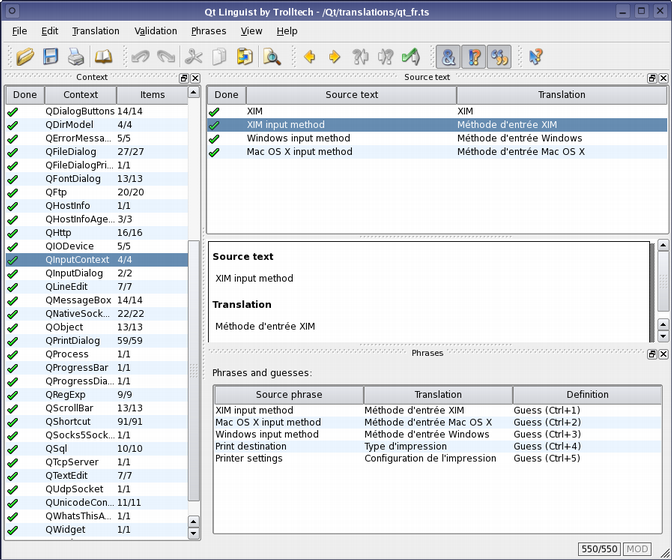
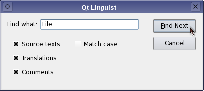

| Home · All Classes · Main Classes · Grouped Classes · Modules · Functions |
[Previous: Qt Linguist Manual: Release Manager] [Contents] [Next: Qt Linguist Manual: Programmers]

Linguist Main Window
Qt Linguist is a tool for adding translations to Qt applications. It introduces the concept of a translation "context" which means a group of phrases that appear together on the screen e.g. in the same menu or dialog.
To start, run Qt Linguist, either from the taskbar menu, or by double clicking the desktop icon, or type linguist (followed by Enter) at the command line. Once Qt Linguist has started choose File|Open from the menu bar and select a .ts translation source file to work on.
Qt Linguist's main window is divided into four main areas. The left hand side contains the Context list, the top right is the Source text area, the middle right is the translation area and the bottom right is the phrases and guesses area. We'll describe them in detail later.
Click on one of the contexts in the context list (left hand side) and then click on one of the phrases that appears in the Source text area (top right). The phrase will be copied into the translation area (middle right). Click under the word 'Translation' and type in the translation. Click Ctrl+Enter (Done & Next) to confirm that you have completed the translation and to move on to the next phrase that requires translation.
The cycle of entering a translation then pressing Ctrl+Enter can be repeated until all the translations are done or until you finish the session. Linguist will attempt to fill the "phrases and guesses" area with possible translations from any open phrase books and any previous translations. Each has a keyboard shortcut, e.g. Ctrl+1, Ctrl+2, etc., which you can use to copy the guess into the Translation area. (Mouse users can double click a phrase or guess to move it into the Translation area.) At the end of the session choose File|Save from the menu bar and then File|Exit to quit.
This appears at the left hand side of the main window by default. The first column, 'Done', identifies whether or not the translations for the context have been done. A tick indicates that all the translations have been done and are valid. A question mark indicates that one or more translations have not been done or have failed validation. The second column, 'Context' is the name of the context in which the translation phrases appear. The third column, 'Items' shows two numbers, the first is the number of translations that have been done, and the second is the number of phrases that are in the context; if the numbers are equal then all the translations have been done. Note that a greyed out tick indicates an obsolete translation, i.e. a phrase that was translated in a previous version of the application but which does not occur in the new version.
The contexts are ordered alphabetically. The phrases within each context are in the order in which they appear in the source program and this may not be the order in which they are shown on screen.
The Context List is a dockable window so it can be dragged to another position in the main window, or dragged out of the main window to be a window in its own right. If you move the Context List, Qt Linguist will remember its position and restore it whenever you start the program.
This appears at the top right of the main window by default. The first column, 'Done', signifies the status of the translation. A tick indicates that the phrase has been translated and passed validation. A question mark indicates that the translation has not been done. An exclamation mark indicates that the translation has failed validation. The second column 'Source text' shows the text that must be translated. The third column shows the translation.
Qt Linguist provides three kinds of validation: accelerator, punctuation and phrase. If the source text contains an accelerator i.e. an ampersand, '&' and the translated text does not contain an ampersand the translation will fail the accelerator validation. Similarly, if the source text ends with a particular punctuation mark, e.g. '?', '!' or '.' and the translation ends with a different punctuation mark the translation will fail the punctuation validation. If the source text has a translation in one of the open phrase books that differs from the translation used the translation will fail phrase validation. (See Validation.)
The Source Text Area is a dockable window.
This area appears at the middle right of the main window by default. It is comprised of three vertical sections. The first section is labelled 'Source text' below which the source text appears. The second section contains contextual information on a light blue background that the programmer has added to assist the translator. If no contextual information has been given this section does not appear. The third section is labelled 'Translation' and this is where you enter the translation of the source text.
This area appears at the bottom right of the main window by default. When you move to a new phrase if the phrase is in one of the phrase books that has been loaded the phrase will appear in this area with its translation. If the phrase is the same or similar to another phrase that has already been translated the phrase and translation will be shown in this area. To copy a translation from the phrases and guesses area press F6 to move to the phrases and guesses area, use the up and down arrow keys to move to the phrase you want to use and press Enter to copy it. If you decide that you don't want to copy a phrase after all, press Esc. In both cases the focus will return to the Translation area. Alternatively, double click the translation you want to use and it will be copied into the translation area.
The Phrases and Guesses Area is a dockable window.
If you wish to leave a translation press Ctrl+L (Next Unfinished) to move to the next unfinished translation. An unfinished translation is one that either has not been translated at all or one which fails validation. To move to the next phrase press Shift+Ctrl+L. You can also navigate using the Translation menu. If you want to go to a different context entirely, click the context you want to work on in the Context list, then click the source text in the Source Text area.
The same phrase may occur in two or more contexts without conflict. Once a phrase has been translated in one context, Qt Linguist notes that the translation has been made and when the translator reaches a later occurrence of the same phrase Qt Linguist will provide the previous translation as a possible translation candidate in the phrases and guesses area. If the previous translation is acceptable just click the Done & Next button (press Ctrl+Return) to move on to the next unfinished phrase.
If a phrase occurs more than once in a particular context it will only be shown once in Qt Linguist's context list and the translation will be applied to every occurrence within the context. If the same phrase needs to be translated differently within the same context the programmer must provide a distinguishing comment for each of the phrases concerned. If such comments are used the duplicate phrases will appear in the context list. The programmers comments will appear in the translation area on a light blue background.
A keyboard accelerator is a key combination that when pressed will cause an application to perform an action. Keyboard accelerators normally come in two forms: Alt key and Ctrl key accelerators.
Alt key accelerators are used for menus and buttons. The underlining signifies that pressing the Alt key with the underlined letter is the same as clicking the menu item with the mouse. For example, most applications have a File menu with the "F" in the word "file" underlined. In these applications the file menu can be invoked either by clicking the word "File" on the menu bar or by pressing Alt+F. The accelerator key which is underlined is signified by preceeding it with an ampersand, e.g. &File. If a source phrase appears with an ampersand in it then the translation should also contain an ampersand, preferably in front of the same letter. The meaning of Alt key accelerators can be determined from the phrase in which the ampersand is embedded. The translator may need to change the letter used with the Alt key, e.g. if the translated phrase does not contain the original accelerator letter. Conflicts with other keys, i.e. having two Alt key accelerators using the same letter in the same context, must be avoided. Note that some Alt key accelerators, usually those on the menu bar, may apply in other contexts.
Ctrl key accelerators can exist independently of any visual control. They are often used to invoke actions in menus that would otherwise take several keystrokes or mouse clicks. They may also be used to perform actions that do not appear in any menu or on any button. For example, most applications that have a File menu have a submenu item called New. In many applications this will appear as "New Ctrl+N". This menu option could be invoked by clicking File then clicking New with the mouse. Or you could press Alt+F then press N since these letters are underlined. But the same thing can be achieved simply by pressing Ctrl+N. Accelerators that use the Ctrl key are shown literally in the source text, e.g. Ctrl+Enter. Ctrl key accelerators have no phrase so the translator must rely on the programmer to add a "comment" which appears in the top right hand pane. This comment should explain what action the Ctrl key accelerator performs. Ideally Ctrl key accelerators are translated simply by copying them by choosing the Begin from Source entry in the Translation menu. However in some cases the letter will not make sense in the target language and must be changed. Whatever letter (or digit) is chosen, the translation should always be in the form "Ctrl+" followed by the letter or digit in upper case. As with Alt key accelerators, if the translator changes the key it must not conflict with any other Ctrl key accelerator.
Later versions of Qt Linguist are expected to help the translator avoid accelerator conflicts.
Some phrases contain variables. Variables are placeholders for items of text that are filled in at runtime. They are signified in the source text with a percent sign followed by a digit, e.g. After processing file %1, file %2 is next in line. In this example, %1 will be replaced at runtime with the name of the first file to be processed and %2 with the name of the next file to be processed. In the translated version the variables must still appear. For example a German translation might reverse the phrases, e.g. Datei %2 wird bearbeitet, wenn Datei %1 fertig ist. Note that both variables are still used but their order has changed. The order in which variables appear does not matter; %1 will always be replaced by the same text at runtime no matter where it appears in the source text or translation and similarly %2, etc.
If the translated text is similar to the source text, choose the Begin from Source entry in the Translation menu (press Ctrl+B) which will copy the source text into the translation area.
Qt Linguist automatically lists phrases from the open phrase books and similar or identical phrases that have already been translated in the Phrases and guesses area.

Phrase Book Dialog
A Qt Linguist phrase book is a set of source phrases, target (translated) phrases, and optional definitions. Phrase Books are created independently of any application, although typically one phrase book will be created per application or family of applications.
If the translator reaches an untranslated phrase that is the same as a source phrase in the phrase book, Qt Linguist will show the phrase book entry in the Relevant phrases panel at the bottom right of the main window. Phrases which have translations that conflict with those given in the phrase book are marked with a question mark in the source text pane. Phrase Books are used to provide a common set of translations to help ensure consistency. They can also be used to avoid duplication of effort since the translations for a family of applications can be produced once in the phrase book and the phrase book used for the majority of translations in each application.
Before a phrase book can be edited it must be created or if it already exists, opened. Create a new phrase book by selecting Phrase|New Phrase Book from the menu bar. You must enter a filename and may change the location of the file if you wish. A newly created phrase book is automatically opened. Open an existing phrase book by choosing Phrase|Open Phrase Book from the menu bar.
To add a new phrase click the New Phrase button (or press Alt+N) and type in a new source phrase. Press Tab and type in the translation. Optionally press Tab and enter a definition -- this is useful to distinguish different translations of the same source phrase. This process may be repeated as often as necessary.
You can delete a phrase by selecting it in the phrases list and clicking Remove Phrase.
Click the Save button (press Alt+S) and then click the Close button (press Esc) once you've finished adding (and removing) phrases.
When a phrase or set of phrases appears in the phrase book double clicking the required target phrase will copy it to the translation pane at the text cursor position. If you want to replace the text in the translation pane with the target phrase, click the translation pane, choose Edit|Select All (press Alt+A) and then double click the target phrase.
Qt Linguist provides three kinds of validation on translated phrases.
Validation may be switched on or off from the menu bar's Validation item or using the toolbar buttons. Phrases that fail validation are marked with a question mark in the source text pane. If you switch validation off and then switch it on later, Qt Linguist will recheck all phrases and mark any that fail validation.
If any phrase in a context is invalid then the context itself will be marked with a question mark; if all the phrases in a context are done and are valid the context will be marked with a tick.
Note that only phrases which are marked as done (with a tick) will appear in the application. Invalid phrases and phrases which are translated but not marked as done are kept in the translation source file but are not used by the application.
Qt Linguist makes use of three kinds of file:

Menu Bar

Toolbar



The Find Dialog
Choose Edit|Find from the menu bar or press Ctrl+F to pop up the Find dialog. Press F3 to repeat the last search. By default the source phrases, translations and comments will all be searched and the search will be case-insensitive. These settings can be changed by checking or unchecking the checkboxes to reflect your preferences.
This dialog is explained in the Creating and Using Phrase Books section.
[Previous: Qt Linguist Manual: Release Manager] [Contents] [Next: Qt Linguist Manual: Programmers]
| Copyright © 2008 Trolltech | Trademarks | Qt 4.3.5 |